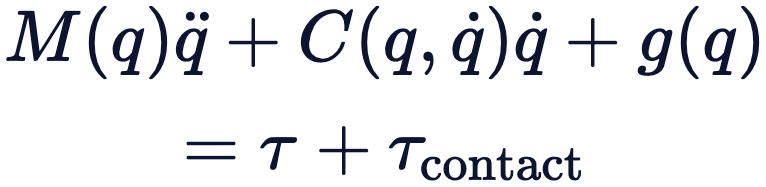
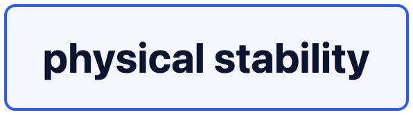
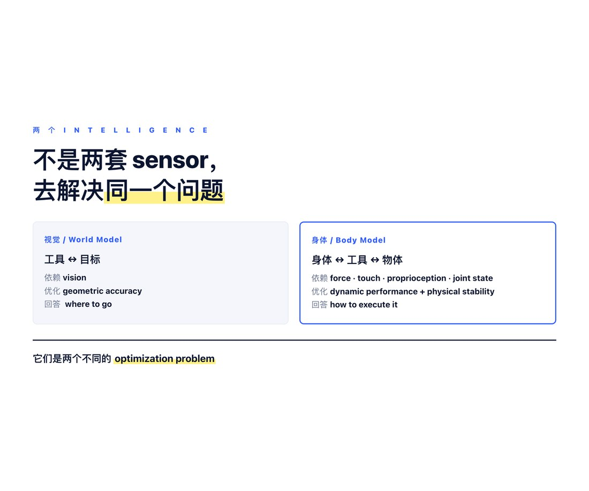
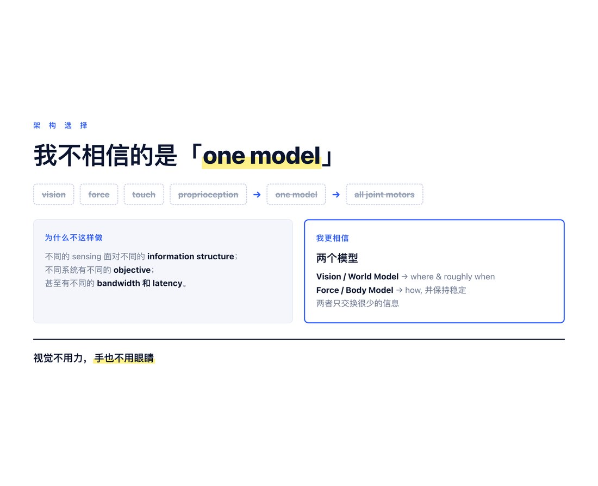
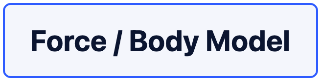
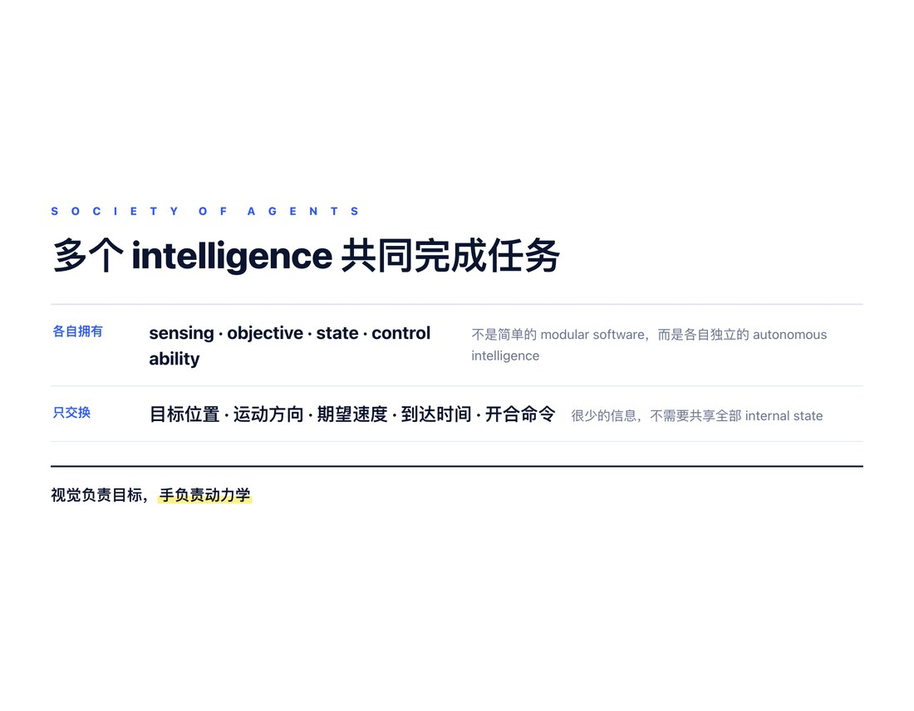
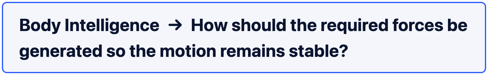

我一直对现在机器人领域一个很流行的方向有点怀疑：把视觉、语言、力觉、触觉、本体感觉都送进一个越来越大的模型，然后让这个模型直接输出每个关节的动作。
我怀疑的不是 VLM 有没有用。
恰恰相反，我认为 VLM 很有用。
只是它的作用，也许应该停在：
perception → understanding → planning.
到了 planning，就够了。
● ● ●
一个最简单的例子：拿镊子夹一个小东西
假设一个人手里已经拿着一把镊子，现在要去夹一个很小的目标。
这个动作看起来简单，但其实里面至少有两个完全不同的控制问题。
第一个问题是：
镊子在哪里？目标在哪里？两者还差多少？
这个问题视觉最擅长。
眼睛可以看到目标，也可以看到镊子尖。
它可以判断：
向前一点。
向后一点。
向左一点。
再靠近一点。
现在可以夹。
如果目标在移动，它还可以不断修正：
目标向右移动了。
镊子还差 3 mm。
应该提前一点过去。
从这个意义上说，VLM 非常有价值。
它可以负责：
识别目标。
理解任务。
判断工具与目标的位置关系。
观察别人是怎么完成这个任务的。
决定下一步大概应该向哪里运动。
它解决的主要是：
tool ↔ target.
可以把它的目标近似写成：
也就是说：
把工具送到正确的位置。
到这里，我完全相信 VLM。
● ● ●
但是，真正拿镊子的手在解决另一个问题
当手真正拿着镊子时，还有完全不同的一组问题。
镊子在手里稳不稳？
有没有开始打滑？
手指的夹持力够不够？
镊子会不会从手里掉下来？
当镊子夹住物体以后，还要知道：
物体有没有在镊子尖之间滑动？
是不是快要掉下来？
夹持力是不是太小？
是不是又夹得太紧？
这些问题，视觉并不擅长。
视觉当然可以在一个物体已经明显发生相对运动以后看到：
“它滑了。”
但是视觉看不到真正的 friction。
它不能直接感受到 contact force。
它也很难直接知道：
当前这个 grasp 到底稳定不稳定。
距离 slip boundary 还有多远。
再增加多少外力就会失稳。
这些事情，手反而知道得更直接。
因为手依靠的是：
force。
touch。
proprioception。
joint state。
contact information。
所以它解决的是另外一个关系：
hand ↔ tool ↔ object.
视觉主要知道：
工具和外部目标之间是什么关系。
手主要知道：
身体、工具和被夹物体之间的物理关系是否稳定。
● ● ●
但底层系统不只是“拿稳”
如果只是说手的任务是“拿稳镊子”，还不够。
因为真正执行动作的时候，手还必须让镊子按照要求运动。
比如高层告诉它：
向前移动 5 mm。
但底层真正需要解决的是：
怎么移动这 5 mm？
多快到达？
加速度多大？
什么时候开始减速？
运动过程中怎样继续保持 grip？
所以底层需要控制的不只是：
还有：
以及：
也就是：
位置、速度和加速度。
而速度和加速度最终都和 force / torque 联系在一起。
最简单地说：
对于真正的手和机器人来说，更接近：

也就是说：
如果想让镊子按照某个速度和加速度运动，底层必须产生相应的 joint torque 和 contact force。
所以 Body Intelligence 实际上同时完成两个目标。
一个是：
包括：
到达指定位置。
达到要求的速度。
产生合适的加速度。
按时完成动作。
保证运动平滑。
另一个是：

包括：
镊子不从手里滑。
工具不掉。
被夹住的物体不滑落。
contact 保持稳定。
遇到 disturbance 时快速恢复。
所以它绝不是一个简单的“防滑 controller”。
它负责的是整个 physical execution。
● ● ●
两个系统的 Objective 根本不同
这才是这个例子最重要的地方。
两个系统不仅使用不同的 sensor。
它们连优化目标都不同。
视觉系统更关心的是：
也就是：
tool–target error 要尽量小。
而 Body Intelligence 更关心的是：
track desired motion
同时：
maintain stable grasp/contact.
也就是说，它需要：
按照给定的速度和加速度运动，
同时保持工具和物体不滑、不掉、不失稳。
所以这并不是：
两套 sensor 去解决同一个问题。
而是：
两个 intelligence 在解决两个不同的 optimization problem。

● ● ●
我真正不相信的，是 One Model Architecture
因此，我不太相信的一种默认 architecture 是：
也就是：
把所有 sensing 都融合起来，
送进一个统一模型，
然后由这个模型直接决定每个关节应该怎样动。
不是说这种方法一定做不到。
它当然可能做出来。
但我真正的问题是：
为什么一定要这样做？
如果不同 sensing 面对的是不同 information structure，
不同系统有不同 objective，
甚至有不同 bandwidth 和 latency，
为什么一定要强迫它们变成一个 model？

● ● ●
我更相信两个模型
对于这个镊子任务，我更相信一个非常简单的结构。
第一个模型是：
它主要依赖 vision。
它负责：
目标在哪里？
工具在哪里？
两者还差多少？
目标是否在移动？
接下来应该往哪里去？
什么时候应该开始夹？
它可以输出：
向前 3 mm。
向右 1 mm。
目标移动了，修改目标位置。
在 200 ms 内到达这里。
然后闭合镊子。
它负责：
where to go
以及大致的：
when to get there.
第二个模型是：

它主要依靠：
force。
touch。
proprioception。
joint state。
它负责：
如何真正产生这个运动？
需要多大的 joint torque？
怎样满足要求的 velocity 和 acceleration？
怎样在运动过程中继续把镊子拿稳？
怎样防止镊子在手里 slip？
怎样让夹住的物体不掉下来？
contact 变化以后怎样立即调整？
所以它负责的是：
how to physically execute it.
一句话：
World Intelligence decides where to go and roughly when to arrive. Body Intelligence generates the forces required to get there while maintaining stability.
● ● ●
VLM 到 Planning 就够了
所以我并不反对 VLM。
相反，我认为 VLM 已经非常适合做：
看。
理解。
判断。
规划。
它可以看到：
目标在哪里。
工具在哪里。
别人怎么做。
下一步应该做什么。
这已经非常重要。
但它完全可以在这里停下来。
它没有必要继续向下吞掉：
force control。
contact control。
slip control。
joint torque control。
VLM 可以说：
向前移动 5 mm，在 200 ms 内到达。
但真正的问题：
拇指需要增加多少力？
食指怎样配合？
当前 contact force 是否足够？
运动过程中要怎样改变 torque？
这些应该属于 Body Intelligence。
所以我更愿意说：
VLM should plan the motion, not own the force.
● ● ●
World Model 也一样
World Model 比 VLM 再进一步。
VLM 更多是在理解现在。
World Model 还可以预测未来。
比如：
这个目标正在往右运动。
300 ms 以后它会到这里。
如果镊子继续直线走，会错过它。
应该提前改变 interception point。
这当然非常有用。
World Model 可以让 planning 更聪明。
但是这仍然主要是在解决：
world prediction.
也就是：
世界接下来会发生什么？
我应该把工具送到哪里？
但是，当镊子真正碰到目标时，
真正发生：
contact。
friction。
slip。
force redistribution。
这些问题的时候，
world model 并不能代替底层的 force controller。
它可以预测：
这个 grasp 可能不稳定。
但是一旦 slip 真正开始，
真正需要立即作出反应的，还是 Body Intelligence。
所以：
A better World Model improves planning, but it does not replace force control.
甚至可以说：
A better brain does not eliminate the need for a spinal cord.
● ● ●
为什么这个例子让我相信 Society of Agents
这个镊子任务让我越来越觉得：
我们理解 intelligence 的核心，也许不是问：
怎样把所有信息融合到一个 model 里？
而应该先问：
不同 intelligence 到底在完成什么功能？
视觉系统主要解决：
tool ↔ target.
Body Intelligence 主要解决：
body ↔ tool ↔ object.
视觉主要优化：
geometric accuracy。
Body Intelligence 主要优化：
dynamic performance + physical stability。
一个知道：
去哪里。
另一个知道：
怎样用正确的力，按照正确的速度和加速度，稳定地做到。
所以我真正不相信的，并不是 VLM。
也不是 World Model。
我不相信的是：
只要模型对世界理解得越来越好，它最终就应该接管所有 sensing、所有 dynamics、所有 force、所有 joint control。
我更相信：
不同功能应该由不同 intelligence 完成。
它们可以互相 communication。
可以互相 condition。
可以互相修正。
但没有必要变成一个统一模型。
这也是我理解的：
● ● ●
Society of Agents
它不是简单的 modular software。
而是多个各自拥有 sensing、objective、state 和 control ability 的 autonomous intelligence 共同完成一个任务。

对于镊子这个最简单的例子：
而：

它们之间只需要交换很少的信息：
目标位置。
运动方向。
期望速度。
到达时间。
开合命令。
而不需要共享全部 internal state。
最简单的一句话仍然是：
视觉不用力，手也不用眼睛。
如果再准确一点：
视觉负责目标，手负责动力学。
而我认为，理解 intelligence 的核心，也许正是理解这种功能上的分工。